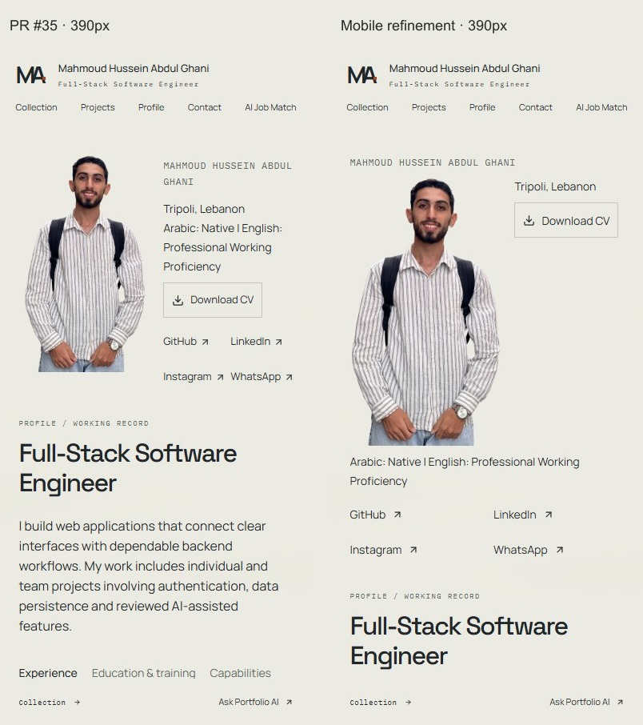
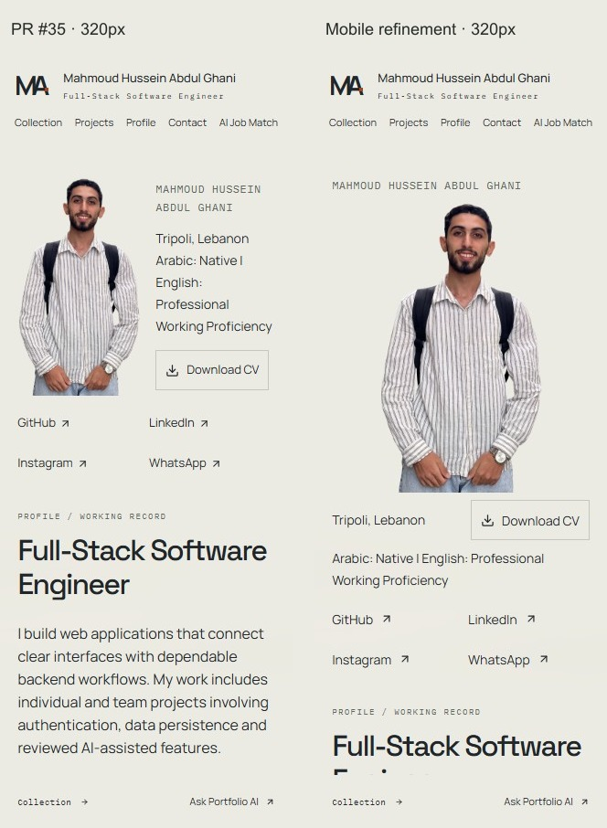
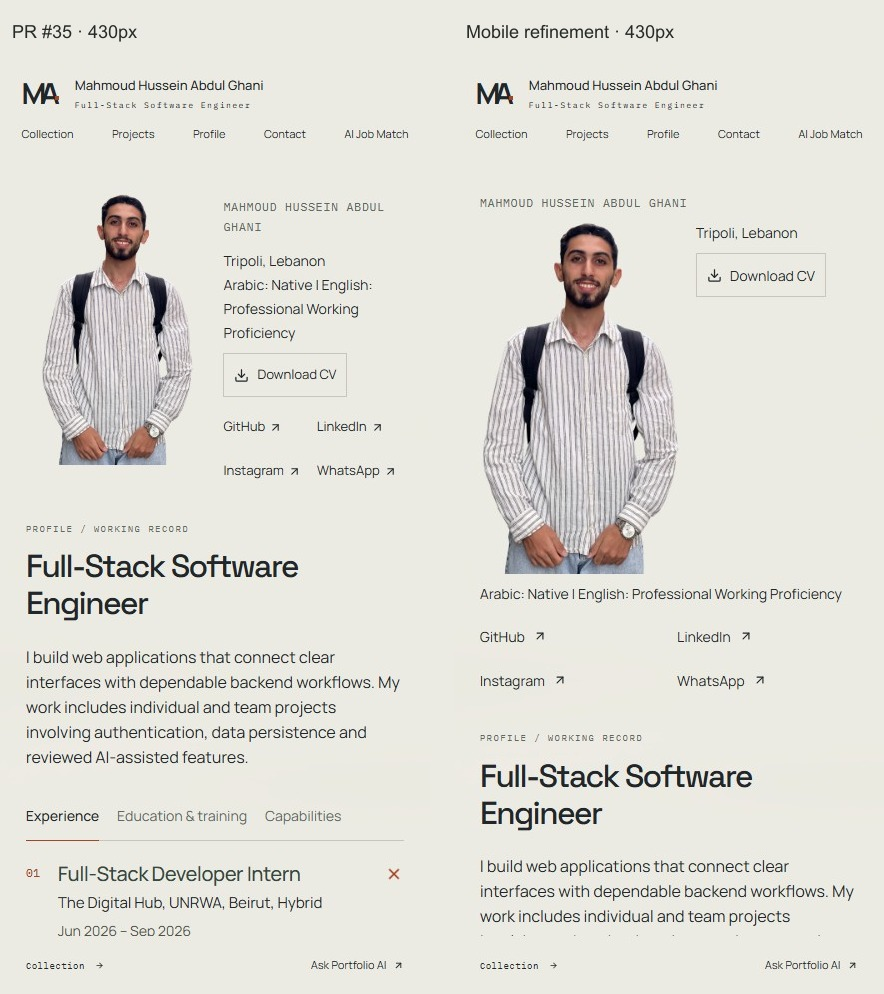
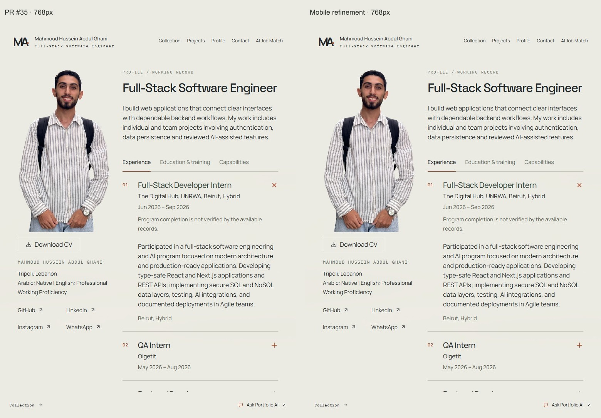
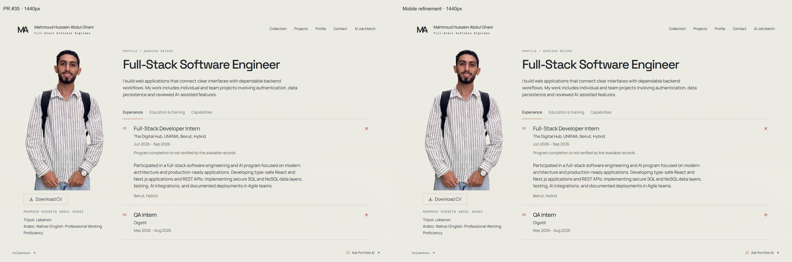

Profile portrait prototype
Mobile composition refinement against draft PR #35, commit 376584bbc8297b2e0afaa8a80a36d69df3591af2. Both sides show the review route with the same faithful portrait and public content. Production /profile remains unchanged.
Interactive review prototype · Current production-style Profile · Download comparison package
Use the mobile refinement draft PR's Vercel Preview. Authorized sign-in may be required; deployment protection is unchanged. Noindex controls indexing and is not access protection.
390px — PR #35 / mobile refinement

320px — PR #35 / mobile refinement

430px — PR #35 / mobile refinement

768px — preserved tablet composition

1440px — preserved desktop composition

The approved PNG/WebP and processing are unchanged. Both hands remain complete; face visibility comes from rendering the same natural-ratio image wider. The backpack remains as approved in PR #35. Speaking/gesturing video is separate; no playback controls are added.
PR #35 baseline measurements · Final measurements and behavior checks · Design QA · Changed files
320px loading · 320px failure fallback · 390px loading · 390px failure fallback · 430px loading · 430px failure fallback


Captures use Windows Chrome emulation with frozen read-only public data, not physical-device testing. Protected hosted content requires separate authenticated review.